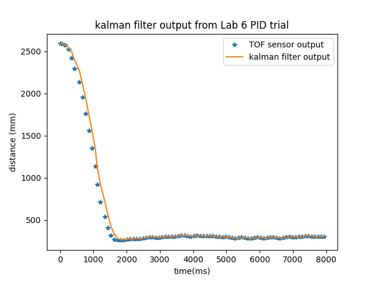

Lab 7
In this lab, PID control was implemented on the artemis in order to simulate the simplest control using one of the sensors on the robot.
Estimate Drag and Momentum
To estimate drag and momentum, as said in class,
\[d = \frac{u}{\text{steady state derivative}}\]and
\[m = \frac{d t_{0.9}}{ln(1s-.9s)}\]where d and m are the drag and mass respectively.
To find this, I used a constant step response towards a wall at a pwm value of 200 since this was the maximum pwm value from my pid trials. Doing a step response resulted in this time of flight data.

As seen from the graph, between the two marked points, the speed reaches steady state at a derivative of about 22613mm/s
Looking at the graph, the 90% rise time was about .8s. Therefore,
\[d = \frac{u}{\text{22613mm/s}} \approx 0.000383\] \[m = \frac{0.000383 * .8s}{ln(1s-.9s)} \approx 0.0001329\]Now, the A and B matrices are given by
\[A = \begin{bmatrix} 0 & 1 \\ 0 & -\frac{d}{m} \end{bmatrix} = \begin{bmatrix} 0 & 1 \\ 0 & -2.88 \end{bmatrix}\] \[B = \begin{bmatrix} 0 \\ \frac{1}{m} \end{bmatrix} = \begin{bmatrix} 0 \\ -60175 \end{bmatrix}\] \[C = \begin{bmatrix} -1 & 0 \end{bmatrix}\]Initialize KF
For discretizing the previously computed matrices, I needed a chosen sample rate to predict filter values at, I chose a sample rate of 15ms, so To discretize these matrices, the formula is
\[A_d = (I + dt*A) = \begin{bmatrix} 1 & 0.015 \\ 0 & 0.957 \end{bmatrix}\] \[B_d = dt*B = \begin{bmatrix} 0 \\ -902.7 \end{bmatrix}\]Next, I needed to
Estimate the noise variables, sigma_u and sigma_z.
\[\Sigma_z = \begin{bmatrix} \sigma_z^2 \end{bmatrix}\] \[\Sigma_u = \begin{bmatrix} \sigma_x^2 & 0\\ 0 & \sigma_v^2 \end{bmatrix}\]to find these variables, from class,
\[\sigma_z = \sigma_{TOF} \approx 20mm\]also,
\[\sigma_x = \sigma_v = \sqrt{10^2 * \frac{1}{dt}} \approx 81\],so
\[\Sigma_z = \begin{bmatrix} 20^2 \end{bmatrix}\] \[\Sigma_u = \begin{bmatrix} 81^2 & 0\\ 0 & 81^2 \end{bmatrix}\]with these values worked out, I could finally create the kalman filter using the function given in class. Since my code is identical to the given code, here is my matrix creation and calling of the function.
u= np.array([[dist[0]],[0]])
sigma = Sigma_u
for t,mo,d in zip(times,motor,dist):
u,sigma = kf(u,sigma,mo/200,d)
kf_times.append(t + time*dt)
kf_out.append(u[0][0])
kf_vel.append(u[1][0])
resulting in this graph

As can be seen, the kalman filter successfully follows the outline of the data allowing me to effectively predict the next TOF point. I used a sampling rate of 95ms since this was the sampling rate of the sensors.
Kalman filter on artemis
I then had to implement this filter in arduino. I implemented the kalman filter on arduino like this.
inline void kf(Matrix<2> &mu, Matrix<2, 2> &sigma, Matrix<1> u, Matrix<1> y, bool update)
{
Matrix<2> mu_p = (A * mu) + (B * u);
Matrix<2, 2> sigma_p = A * (sigma * (~A)) + Sigma_u;
if (update)
{
Matrix<1, 1> sigma_m = C * (sigma_p * ~C) + Sigma_z;
Matrix<1, 1> sigma_m_inv;
bool inv = Invert(sigma_m, sigma_m_inv);
Matrix<2, 1> kkf_gain = sigma_p * ((~C) * sigma_m_inv);
Matrix<1, 1> y_m = y - C * mu_p;
mu = mu_p + kkf_gain * y_m;
sigma = eye_2 - kkf_gain * (C)*sigma_p;
}
else
{
mu = mu_p;
sigma = sigma_p;
}
}
I then had to modify my PID loop from Lab 6. What I did was wait my sampling time (15ms) and if the time of flight sensor had data,
if (dist1Buff[cnt] != 4000)
kf(state, sigma, float(motorBuff[cnt]) / 200, dist1Buff[cnt], true);
else
kf(state, sigma, float(motorBuff[cnt]) / 200, dist1Buff[cnt], false);
kfBuff[cnt] = state(0);
but if there was no data
kf(state, sigma, float(motorBuff[cnt]) / 200, dist1Buff[cnt], false);
dist1Buff[cnt] = -1;
kfBuff[cnt] = state(0);
Then, I would call my PID function with the value of state(0). With this done, I finally tested this filter on the robot resulting in this trial,
and this data
the first value after collecting sensor data is too high and slowly fixes itself as it moves closer to the next data collection. Since I had a high Kd value in my PID loop, the noise in the motor value graph is probably due to the cascaded kalmar filter output.
Revisiting python model
I had to modify certain values in the B matrix as the motor values didn’t have as much of an effect on the kalman filter output as expected. Because my data was positive, I needed to make the C matrix equal to [1 0] instead of [-1 0]. I also needed to make my B matrix You can see that the output is tiered as my B matrix was still not steep enough. I reran my python program attempting to add in a prediction step in order to better analyze my kalman filter model resulting in this data.
I had to increase the B matrix values by about 3 times, I also had to make the value negative. This is probably because of my positive distance values as well as a mass value that was larger than expected.
The code I used to produce this data was like this,
for t,mo,d in zip(times,motor,dist):
for time in range(int(tot_dt/dt)):
if time == 0:
u,sigma = kf(u,sigma,mo/200,d)
else:
u,sigma = kf(u,sigma,mo/200,-1)
pass
kf_times.append(t + time*dt)
kf_out.append(u[0][0])
kf_vel.append(u[1][0])
As can be seen, with modifications to the python code, the cascaded nature of the filter is seen with a small sample period.